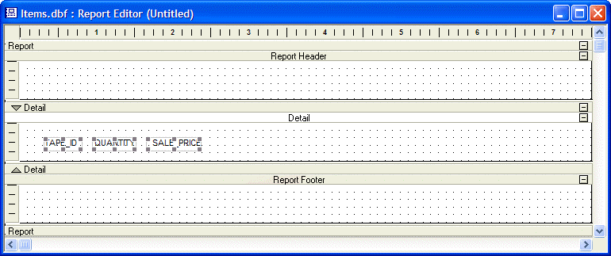

How to Use the Report Editor
Reports are a versatile type of layout for printing data. Reports can order and select the record, group related records, and perform calculations. Report layouts can divide pages into columns, display graphics, and include page headers and footers.
Open the AlphaSports sample database.
Display the Reports tab of the Control Panel.
Select "Customer List" and click Design.
The Report Editor will open and display the structure of the report, which is moderate complex, given that it has a continuation header and a group.

The Report Editor shows the division between sections and layout regions with section title bars. On each title bar there is a Show/Hide button which lets you toggle the appearance of the section.
The Show/Hide buttons only control the Report display in the Report Editor ; they do not effect the Report appearance when you print or preview it. You can also show and hide Report components by selecting Sections, Titles, or Regions from the View menu.
On the Report Editor toolbar, click the Print Preview button to preview your Report. You can navigate in the Preview window, using the Print Preview toolbar.

Select File > Print..., or click  on the toolbar to display the Print
dialog box.
on the toolbar to display the Print
dialog box.
Use the Print dialog box to specify a printer, range of pages, and number of copies to print.
 Note : If printing
or previewing takes longer than you expected, check to see if you have
pre calculate record counts in View > Settings > Preferences >
Reports set to "Yes".
Note : If printing
or previewing takes longer than you expected, check to see if you have
pre calculate record counts in View > Settings > Preferences >
Reports set to "Yes".
You can convert your report to an Adobe Acrobat Portable Document Format (PDF) file to distribute to others. Anyone who has the Acrobat Reader, which is free and widely distributed, can read the PDF file.
To print a report to a PDF file:
With the Customer List report in the Report Editor, click the Print Preview button. The report appears in the Print Preview window.
Click
 on the toolbar. Alpha Anywhere converts the report to PDF format,
and displays the report in the Adobe Acrobat Reader. Alpha
Five assigns the new PDF file the same name as the report, with
a PDF extension.
on the toolbar. Alpha Anywhere converts the report to PDF format,
and displays the report in the Adobe Acrobat Reader. Alpha
Five assigns the new PDF file the same name as the report, with
a PDF extension.
To convert a report to PDF and email it:
Click
 on the toolbar. Alpha Anywhere saves your report in PDF format,
opens your email program, and attaches the PDF file to a new email message.
on the toolbar. Alpha Anywhere saves your report in PDF format,
opens your email program, and attaches the PDF file to a new email message.Address the email and click Send.
This procedure describes the creation of an Invoice report similar to the report found in the AlphaSports sample database.
Open the AlphaSports sample database.
Display the Reports tab of the Control Panel.
Click New. The New Report dialog appears.
Select "Invoice.set" as the data source, and click Next.
Select Start from a blank Report, and click Finish. A new, blank report appears in the Report Editor with three empty report sections.

Adjust the Grid
Because of the tight spacing of this report, it is useful for the grid to have a smaller spacing. Select Report > Grid... to display the Grid dialog. Click the down arrow to change the spacing to .0833 inch.
Removing the Report Header
Because this report is actually a series of invoices, which will be separately sent to different customers, there is no need for a report header or title.
Click the topmost horizontal bar labelled "Report" in the Report Editor.
Right click on the bar to show the right click menu.
Clear the Report Header check.
Clear the Report Footer check.
Inserting the Invoice_Number Group
Select Report > Insert Group Break to display the New Group Properties dialog.
On the Group tab select "Invoice_Number" from the Break on change in list.
On the Region tab select Keep group together on page.
Click OK to continue.
Resizing the Group Header
Right click on the white space of the layout area of the group header.
Select Properties... .
Display the Region tab.
Set the Height to 4.3 inches.
Click OK to continue.
Placing Labels on the Group Header
If the toolbox is not visible, click
 on the toolbar.
on the toolbar.Select the
 RTF tool and draw a rectangle across the top of the group
layout area.
RTF tool and draw a rectangle across the top of the group
layout area.Type the following text into the new RTF label.
|
Alpha Sports 83 Cambridge Street Burlington, MA 01803 (781) 229 4500 |
If the Text Toolbar is not visible, click
 .
.Select the text in the RTF label and click
 and .
and .The rectangle should have a height of .75 inches, width of 7.5 inches, a left position of 0, and a top position of 0. You can check this by looking at the Dimensions tab of the label's Properties dialog.
Select the text tool and draw a rectangle across the middle of the group layout area. The text is "Invoice".
Right click on the text label and open its Properties dialog.
On the Alignment tab select Horizontal Left and Vertical Bottom.
On the Border tab select "Single Line" in the Border Style list and clear the Left, Right, and Top check boxes.
On the Font tab select "Arial" in the Face list, "18" in the Size list, and select the Bold checkbox.
On the Dimensions tab set the height to .44 inches, width to 7.5 inches, left position to 0, and top position to 1.25 .
Create another text label. The text of the label will be "Description". The alignment will be left and bottom. It will have a single line border only on the bottom. The font will be Arial, 10 point, and bold. the position will be height 0.2, width 4.15, left 0.1, and top 4.
Placing Frames on the Group Header
Select the
 text tool and draw a rectangle across the middle of the group
layout area.
text tool and draw a rectangle across the middle of the group
layout area.Display the frame's Properties dialog box.
Select Allow growth when printing on the Setup tab.
Select "Single Line" in the Border Style list on the Border tab.
On the Dimensions tab:
Set Left to .0625
Set Top to 1.9375
Set Width to 2
Set Height to 1.6875
Click OK to continue.
De-select the new frame.
Switch to the Selection Tool
 on the Toolbox.
on the Toolbox.Select the new frame, right click and select Copy.
Right click on the group layout area and select Paste.
Display the frame's Properties dialog box.
On the Dimensions tab:
Set Left to 2.125
Set Width to 2.625
Copy and paste this frame to create another frame.
On the Dimensions tab set the width to 2.5875 inches, and left position to 4.8125.
Select the 3 frames in sequence from left to right.
Select Arrange > Align Positions > Top.
Select Arrange > Align Sizes > Height.
Click OK to continue.
Placing Labels on the Frames
Select the text tool and draw a rectangle across the middle of the group layout area. The text is "Invoice".
Right click on the text label and open its Properties dialog.
On the Alignment tab select Horizontal Left and Vertical Top.
On the Border tab select "Solid" in the Fill Style list.
Select "White" in the Fill Foreground Color list.
On the Font tab select "Arial" in the Face list, "10" in the Size list, and select the Bold checkbox.
On the Dimensions tab set the height to .1875 inches, width to .625 inches, left position to .125, and top position to 1.8125.
Copy and paste this text label. Change the text of the label to "Billing". The position will be left 2.1875.
Copy and paste this text label. Change the text of the label to "Shipping". The position will be left 4.875.
Select the 3 text blocks in sequence from left to right.
Select Arrange > Align Positions > Top.
Placing Invoice Header Fields on the Report
You use the <span class=Screen>Drag-and-Drop List</span> to insert field objects in the report layout areas. When you select a field to insert in the report and drag it to the report section, an object frame appears as you drag the field onto the report.
The Drag-and-Drop List window contains a genie
button  that is on by default. When the genie button is on,
a Summary Field Genie appears that lets you
perform a summary calculation for a single field which you are adding
to the layout.
that is on by default. When the genie button is on,
a Summary Field Genie appears that lets you
perform a summary calculation for a single field which you are adding
to the layout.
If you do not want the Summary Field Genie to appear, click the genie button in the Drag-and-Drop List window, to turn it off.
When adding multiple fields, the Summary Genie does not appear. Also, when adding multiple fields, you can specify their alignment as vertical or horizontal by clicking the appropriate layout button in the Drag-and-Drop List window.
 Place labels
above fields
Place labels
above fields Place labels
to the left of fields
Place labels
to the left of fields
After you have placed fields on the report, you can change the style, appearance, and other attributes of the fields.
Push the Vertical alignment button in the Drag-and-Drop List window
down so that the Horizontal alignment button pops up.Select "Fields with Titles" in the drop down list at the top of the Drag-and-Drop List window. When you place fields on a layout, the titles may be grouped with the fields. In some cases this is convenient.
Select View > Report > System > Styles, clear the Automatically group fields & titles check box, and click OK.
Drag the Invoice Header Invoice_Number field into the Invoice frame.
When the Summary Genie appears, click OK.
Repeat this process and place these fields under Invoice_Number : Date, Sales_Rep, Delivery_By, Pay_Method, and Customer_Id.
Select the top-most label, which should be "Invoice Number", and use the cursor keys to position it.
Use the cursor keys to position "Invoice Date" under "Invoice Number". The goal is to establish a spacing between the fields that will all 6 fields to comfortably fit within the frame.
The labels will probably not be aligned. SHIFT select all 6 labels from top to bottom, then click Arrange > Align Positions > Right. Note, it is important to select the labels in the order that you want them to appear from top to bottom.
While the labels are still selected, click Arrange > Align Spaces > Vertical.
SHIFT select all 6 fields from top to bottom, then click Arrange > Align Positions > Left.
Select each label and then select the corresponding field. Click Arrange > Align Positions > Top.
Double click each label and modify its text and width so it matches the picture below.

Reduce the sizes of the largest label and largest field, so that it fits inside the frame.
Use the Select Arrange > Align Sizes > Width function to make the other labels and fields match.
Items fields: "Tape_ID", "Quantity", and "Sale_Price", and drag them into the Detail layout area of the Report. The fields appear in the Report.
Placing Billing and Shipping Fields on the Report
Select the
rich text tool and draw a rectangle inside the billing
frame. The Text Toolbar will appear.Drag the Firstname field from the Drag-and-Drop List window into the new field. Add a space character, then drag the Lastname field onto the same line. Press SHIFT + ENTER to start a new line.
Drag the Company and Bill_Address_1 fields from the Drag-and-Drop List window. Follow each field with a line break.
Click Insert... on the Text Toolbar to display the RTF Insert Command dialog.
Click If... to display the Insert If.. Expression dialog.
Enter the following expression into the Logical Expression control and click OK.
|
alltrim("bill_address_2") <> "" |
Insert a CR-LF before the "Endif" so the field looks like this.
|
FIRSTNAME LASTNAME COMPANY BILL_ADDRESS_1 If alltrim("bill_add... Endif |
Drag the Bill_Address_2 field to the empty line before the "Endif". This expression specifies that the Bill_Address_2 field will appear only if not empty.
Add the Bill_City, Bill_State, Bill_State_Region, Bill_Postal_Code, and Bill_Country fields into the RTF control, so it looks like the following.

You can resize Report sections, by placing your cursor over a horizontal layout boundary. When the cursor becomes a two-headed arrow, click and drag to adjust the section height.
In the next step, you add a calculated field for the product of the quantity times the sales price.
In the Drag-and-Drop List, under Calculated Fields, select "New Calc/Summary Field", and drag it into the Report, next to the Sale_Price field. The New Calculated Field dialog box appears.

Enter the Name, Extension, and click the Expression Builder button. The Expression Builder dialog box appears.
Create the following expression: Quantity*Sale_Price, and click OK.

Alpha Five displays the expression in the New Calculated Field dialog box. Picture
{kind=link}

-
Click OK. Alpha Five adds the Extension field to the Report, next to the Sale_Price field.
You can align selected objects in one layout region by using the Arrange menu and toolbar, like you did when working with Forms. In addition, you can use the horizontal and vertical rulers, to move and align selected objects across several layout regions.
For small movements of selected objects, you can use the Shift+Arrow keys, and for slightly larger movements, use the Arrow keys.
Click the Save button on the toolbar, and save the Report as "Invoice Items".
 Note
: Report names are limited to a maximum of 24 characters.
Note
: Report names are limited to a maximum of 24 characters.
In the next section, you insert additional sections in the report, and add objects.
In the next procedure, you add sections to the Invoice Items Report.
To add a Report section:
With the Invoice Items Report in the Report Editor, right-click on the Report section band and select Properties, or select Report > Properties > Report Properties from the menu bar. The Report Properties dialog box appears.
Click the Head/Foot tab.

Select Has Page Header, Has Page Footer, and click OK. The new sections appear in the report. You might have to enlarge the Report Editor window to see them.
Alpha Five provides predefined system fields that you can add to your report. These system fields can display information such as Page numbers, current date, and sort order.
The following table describes Alpha Five system fields.
|
Field |
Description |
|
Date |
Prints the computer's system date on the report. This predefined calculated field uses the DATE() function as its expression. |
|
PageNumber |
Prints the current page number of the report. This predefined calculated field uses the PAGENO() function as its expression. |
|
PageXofY |
Prints the page number and the total number of pages in the Report. For example, a field value of Page 1 of 8 indicates the first page in a eight page report. |
|
Current_Order |
Prints the sort order expression for the report. |
|
Current_Filter |
Prints the Report record selection expression on the report. |
You use the <span class=Screen>Drag-and-Drop List</span> to insert system fields in a report.
To insert a system field in the Report:
With the Invoice Items Report in the Report Editor, from the Drag-and-Drop List, select "Date" under System fields, and drag it in the Report, in the Page Header section.
From the Drag-and-Drop List, select "PageXofY" under System fields, and drag it in the Report, in the Page Footer section. The system fields appear in the Report.

The current system date, and the current page and total number of pages, appear when you preview or print the Report.
Click the Save button on the toolbar to save the layout, and click the Print Preview button to view the Report.
Click Exit Preview to return to the Report Editor. Next you add text objects and format some field objects.
Adding and Formatting Report Objects
In the following procedures, you create a title heading for your report, some column headings, and you format some fields. You have many options for adding objects and enhancing the Report appearance. In the next sections, you add and format some objects.
To add objects to the Report:
With the Invoice Items report in the Report Editor, click the Toolbox button in the toolbar. The Toolbox appears.

From the Toolbox, select the Text tool, and create a rectangle on the Report, in the Page Header for Report section.
Enter the text "Invoice Items Report".
Right-click in the text field, and select Properties. The Text Properties dialog box appears.

 Note
: You can access object properties by selecting the object, and pressing
the F12 key.
Note
: You can access object properties by selecting the object, and pressing
the F12 key.
Click the Alignment tab, and under Horizontal Alignment, click Center.
Click the Font tab, and select Arial, 14, and Bold.

Click OK. The report appears with the title text you specified.

Click Save and preview the report.
Click Exit Preview to return to the Report Editor. In the next section, you group your Report into sections according to Invoice Number.
You can divide data into subsets by creating a group. The formation of groups is based on a group break expression. A group break expression can consist of a single field, or a calculated expression composed of a combination of fields, functions, and operators.
You use the New Group Properties dialog box to specify the grouping for a Report.
To create a group for the Report:
With the Invoice Items Report in the Report Editor, select Report > Insert Group Break. The New Group Properties dialog box appears.
Click the Group tab, select "Invoice_Number" in the Break on change in: drop-down list box, and enter "Invoice Number" in the Label text box.

Click the Region tab.
Select Keep Group Together on Page, and click OK. Alpha Five adds Group Header and Group Footers to the report.
Select "Invoice_Number" in the Drag-and-Drop List, and place it in the Group Invoice Number Header of the report.
Using the Properties dialog box, format the field as Arial, 12, Bold, and Italic.
Using the Toolbox, place a Text object next to the Invoice Number field object.
Enter the text "Invoice Number", and apply the format Arial, 12, Bold, and Italic, with Center Horizontal Alignment.

-
Enlarge the Group Invoice Number Header.
In the next steps, you use the Text tool to create a text object in the Group Invoice Number Header for each field object in the Detail section.
Using the Text tool, create the following text objects and place them in the Group Invoice Number Header, aligned above the corresponding field object: Tape ID#, Quantity, Cost, Extension.
In the Properties dialog box for each text object, specify Center Horizontal Alignment, and the font, Arial, 10, and Bold.

Right-click on the Sale_Price field object and select Properties. The Field Properties dialog box appears.
Click the Format tab, and select the "$123,456.78" Format Style, and click OK.

Repeat steps 12, and 13 for the Extension field object.
Click Save and preview the Report. The Invoice Items Report appears grouped by invoice number.

Click Exit Preview to return to the Report Editor.
You can use several groupings, but you must take into consideration the nesting order. For example, you might group invoice line items by media type (tape, DVD) and invoice number. If you grouped by invoice number first and then by media type, you would get a list of DVD's for each invoice number and a separate list of tapes for each invoice number. If you grouped by media type first, you would get the line items grouped for the DVD's rented, and then a list of tapes rented for each invoice number.
Suppressing Blank Space in a Report
Alpha Five lets you suppress blank space at the end of each report section, within report sections, and within objects.
To suppress blank space:
Right-click in the white space in a layout region, such as in the Detail section, and select Properties from the right-click menu. The Region Properties dialog box appears.
On the Region tab, select Shrink contents of band, and click OK.

To have Alpha Five suppress blank space within a report band, you must also select the Allow Shrink property for the objects in the Report section.
Right-click on the Sale_Price field, and select Properties.
On the Setup tab in the Field Properties dialog box, select Allow Shrinking.

Alpha Five can also suppress blank space at the end of individual objects you place on a report. For a multi-line memo field object on a report, you would make the object size big enough to print the maximum memo size. However, for records that contain less text, you might like to shrink the size of the object. To shrink the size of the object, right-click on the object, select the Setup tab, and select Allow Shrinking.
Placing Memo Fields on Reports
When you draw a memo object on a report, you should make it only one line high. It will expand if it needs to, since the "allow growth when printing" property defaults to true.
Creating a Summary Calculation
You can provide summary information for your report by creating a calculated field that summarizes groups.
In the following procedure, you create summary fields for the total number of tapes and total sales amount for each invoice.
To create a summary field:
With the Invoice Items report in the Report Editor, click the Drag-and-Drop List button. The Drag-and-Drop List window appears, with the Genie button on (depressed).
From the <span class=Screen>Drag-and-Drop List</span> , select the "Quantity" field, and drag in into the Group Invoice Number Footer. When you release the mouse button, the Summary Field Genie appears.

The Summary Field Genie lets you specify whether you want to print the value of the field itself, or some calculated value, such as the total, or count of that field.
Select Total of the Field, and click the Advanced button. The Summarization Advanced Settings dialog box appears.

You can determine the records to include in the summary operation by setting the Group and Subgroup parameters. Optionally, you can modify the calculated field name and display characteristics that Alpha Five assigns.
Keep the Group and Subgroup default settings.
Change the Calculated Field Name to "total_no_tapes", and click OK.
In the Summary Field Genie, click Finish. The total_no_tapes field appears in the Group Invoice Number Footer of the report.
From the Drag-and-Drop List, select the "Extension" field, and drag in into the Group Invoice Number Footer. The Summary Field Genie appears.
Select Total of the Field, and click Finish. The total calculated field appears in Group Invoice Number Footer.
With the Total Extension field selected, press the F12 key to display the Field Properties dialog box.
Click the Format tab, select the Format Style, $123,456.78, and click OK.
Create two text labels: "Total Number of Tapes" and "Total Invoice Sales", and place them next to the corresponding field objects. Picture
{kind=link}

Using the Properties dialog box, format the text fields as Arial, 10, and Bold.
Click Save and Print Preview. The report appears displaying the total number of tapes and total sales for each Invoice.

Importing a Layout as a Starting Point for a New Report
If you have already created a form or browse, you can use it to create a report. The following example creates a report from the CustomerBrowse browse in the AlphaSports sample database.
Display the Reports tab of the Control Panel.
Click New to display the New Report dialog.
Select the "customer" table in the Data Source list.
Select the Start from a Blank Report radio button and click OK.
Select Report > Import > Browse to display the Import Browse dialog.
Click No when the dialog asks if you want to save changes to the current report.
Select "CustomerBrowse" and click OK.
The Report Editor should look like the following. Note that the report only contains a detail section. You will want to add a report header and footer before the report is completed.

After clicking
 (preview), the report should look like this:
(preview), the report should look like this:

See Also